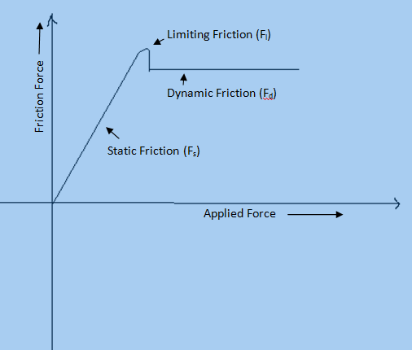

उद्देश्य
चरम घर्षण एवं अभिलम्ब प्रतिक्रिया बल का अध्ययन करना तथा वस्तु तथा सतह के बिच घर्षण ज्ञात करना।
आवश्यक सामग्री ( वास्तविक प्रयोग )
- लड़की का टुकड़ा
- खांचेदार भार हेंगर सहित
- एक सिरे पर घर्षण रहित पुल्ली लगा क्षैतिज समतल (मेज का टॉप)
- वजन बक्सा
- धागा
सिद्धांत

जब दो कोई वस्तु किसी सतह पर बलों की संतुलन की अवस्था में विराम अवस्था में होता हैं, अब जब इस वस्तु के ऊपर बल लगता है तब वस्तु, सतह पर गति करने का प्रयास करती है जिससे वस्तु और सतह के मध्य गति की विपरीत दिशा में स्थैतिक घर्षण बल ( Static Friction Force ) कार्य करता है। यह घर्षण बल, लगाए गए बल के अनुक्रमानुपाती होता हैं एवं तब तक ही रहता है जब तक वस्तु सतह पर गति करना आरम्भ नहीं करता है। स्थैतिक बल के अधिकतम मान को चरम घर्षण बल (Limiting Friction Force) कहतें हैं ,अर्थात यदि लगाया गया बल, चरम घर्षण बल से अधिक होगा तभी वस्तु सतह पर गति आरम्भ करेगी। जब वस्तु सतह पर गति कर रही होती है तब भी एक प्रकार का घर्षण बल कार्य करता है जिसे गतिज घर्षण ( Dynamic Friction Force ) कहतें हैं।
अतः स्थैतिक घर्षण
Fs = μs R
जहां μs स्थैतिक घर्षण का गुणांक कहा जाता है यह आयामरहित स्थिरांक हेाता है, लेकिन संपर्क में आने वाली सतहों की प्रकृति पर निर्भर करता है.
गतिज घर्षण का बल
Fd = μd R
जहां μd को गतिज घर्षण का गुणांक कहा जाता है l गतिज घर्षण लिमिटिंग घर्षण से कम हेाता है.
स्थैतिक घर्षण के नियम है:
- चरम घर्षण की मात्रा संपर्क में आने वाली दो सतहों की पॉलिश की प्रकृति और स्थिति पर निर्भर करती है l
- जब तक सामान्य प्रतिक्रिया समान बनी रहती है, चरम घर्षण की मात्रा संपर्क में आने वाली सतहों के क्षेत्रफल और आकार से स्वतंत्र हेाती है
- चरम घर्षण' Fl ' की मात्रा संपर्क में आने वाली दो सतहों के बीच सामान्य प्रतिक्रिया ' R' से सीधे समानुपातिक होती है l
अतः Fl α R
Fl = μl R
जहां μl को चरम घर्षण का गुणांक कहा जाता है.यह 'संपर्क में आने वाली सामग्री के प्रकार पर आधारित घर्षण की माप है l
इसलिये, घर्षण का गुणांक
μl = Fl / R
X अक्ष के साथ सामान्य प्रतिक्रिया, R और Y अक्ष के साथ लिमिटिंग घर्षण, F से एक ग्राफ खींचा जा सकता है और यह एक सीधी रेखा होती है l